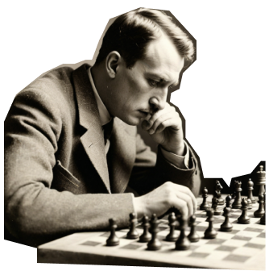
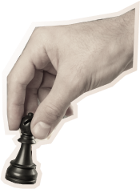
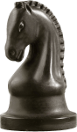
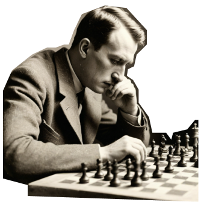
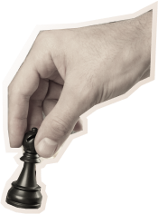
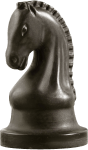

четырех коней
Превратите уездный город в столицу земного шара
Оплатите взнос на телеграммы
для организации Международного
васюкинского турнира по шахматам
Оплатите взнос на телеграммы
для организации Международного
васюкинского турнира по шахматам
Дело помощи утопающим — дело рук самих утопающих!
Шахматы двигают вперед не только культуру, но и экономику!
Лед тронулся, господа присяжные заседатели!
Дело помощи утопающим — дело рук самих утопающих!
Шахматы двигают вперед не только культуру, но и экономику!
Лед тронулся, господа присяжные заседатели!


 





По всем вопросам обращаться
в администрацию к К. Михельсону
Строительство железнодорожной магистрали Москва-Васюки

Открытие фешенебельной гостиницы «Проходная пешка» и других небоскрёбов
Поднятие сельского хозяйства в радиусе
на тысячу
километров: производство овощей, фруктов, икры, шоколадных
конфет
Строительство дворца
для турнира
Размещение гаражей
для гостевого
автотранспорта
Постройка сверхмощной радиостанции
для передачи всему
миру сенсационных результатов
Создание аэропорта
«Большие Васюки»
с регулярным
отправлением почтовых самолётов и дирижаблей во все концы
света, включая Лос-Анжелос
и Мельбурн
Дело помощи утопающим — дело рук самих утопающих!
Шахматы двигают вперед не только культуру, но и экономику!
Лед тронулся, господа присяжные заседатели!
Дело помощи утопающим — дело рук самих утопающих!
Шахматы двигают вперед не только культуру, но и экономику!
Лед тронулся, господа присяжные заседатели!